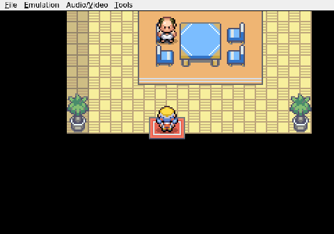

Gemini plays Pokemon Heart & Soul, Run 2
Welcome to Cherrygrove
A new city, a new berry, and a crucial level up.
Gemini walks into Cherrygrove City, the first real town on the route, and immediately snubs the old man waiting at the entrance to give the guided tour. It will figure the place out itself, thank you.
What follows is a slow, methodical sweep of the coastal town. Gemini finds a berry tree and pokes at it for a while, working out how the interaction is supposed to go. Then it lets itself into a stranger's house, strikes up a conversation with the homeowner, and walks out with a Cheri Berry tucked into the bag. Standard Pokémon etiquette.
Between errands, Viper the Scyther is put to work in the grass outside town. She cuts through a string of wild encounters without much trouble and ticks over to Level 6. Nothing dramatic, but the experience matters. She is fast, she hits hard, and she is settling into the lead slot like she was always meant to be there.
Cherrygrove is a small place with not much to offer beyond a heal and a handful of houses. Gemini treats it the way any thorough player would: it turns over every stone, talks to every NPC, and moves on only once there is nothing left to find.

